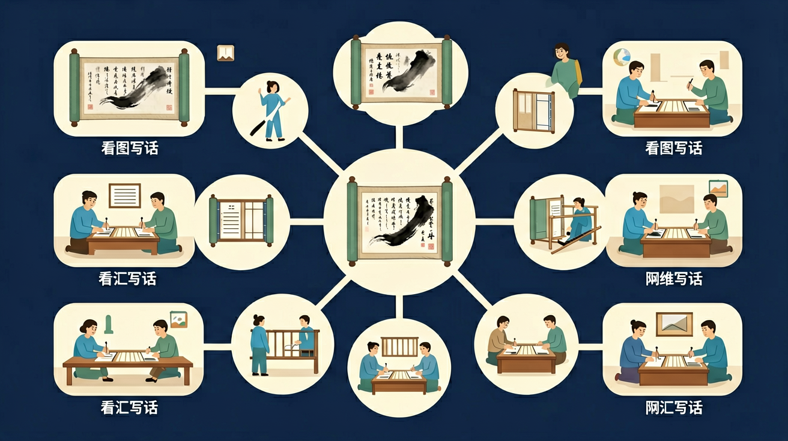

🎯 能说出图画中的3个关键要素（人物/动作/环境）
🎯 能判断例句中哪些细节属于合理想象
🎯 能分析两篇例文并指出哪篇更生动具体
❓ 为什么我写的句子总是像在念课文，不像在说话？
❓ 老师说的'生动具体'到底要加多少细节才够？
❓ 图上两个人明明在吵架，为什么不能写'他们打起来了'？
学完这一课，这些问题你都能自信地回答。
看图写话时，最先应该注意：
下面哪个是'合理想象'：
看图写话是低中年级常见训练：观察图画，想象合理情节，用通顺的句子写出时间、地点、人物和事情。观察要有序，想象要合理，表达要完整。
先整体后局部观察：图上有谁、在哪里、做什么、表情怎样。用“谁、在什么地方、干什么、结果怎样”提问，再把答案连成几句通顺的话，可加一点合理想象。
常见误区：常见误区是观察无序漏掉主要人物，或想象过于离奇脱离画面。应立足画面，合理补充。
看图写话时首先要？
同一幅图分别用“叙事”“写对话”两种方式写话，比较哪一种更适合这幅图。训练观察与表达的灵活切换。
And：学生能描述图片中的物体
But：容易把所有内容都写出来，分不清主次
Therefore：教会学生抓住图片的核心要素
核心是找图片里‘谁在干什么’或‘什么怎么了’。比如一张公园图：有5个小孩在放风筝，2个老人在下棋，远处还有3只小狗。重点应写‘孩子们快乐地放风筝’，因为风筝占画面1/3面积，老人和小狗只是背景。就像拍照要聚焦主体，模糊背景一样。
🌍 就像你拍生日蛋糕时，蜡烛和奶油花纹是重点，旁边饮料瓶不用详细写。妈妈发朋友圈也总选最显眼的照片呢！
下雨天图片中，应该重点写：
And：学生能写出人物动作
But：画面是静止的，写不出声音和对话
Therefore：训练用象声词和合理想象丰富描写
好的描写要让纸上的画‘出声’。比如足球赛图片：可以想象‘砰！球打在门框上’‘加油！红队10号真厉害！’。但要注意合理性，小狗图片不能突然写‘汪汪说我要上学’。例：小猫追毛线球的图，加上‘喵呜~爪子勾住毛线’就比单纯写‘猫在玩’生动3倍！
🌍 就像你看动画片时，虽然画面是假的，但‘哐当’‘嗖嗖’这些声音让你觉得特别真实对吧？
野餐图最适合加什么声音？
And：学生会用‘有一天’开头
But：所有事件都挤在同一时刻
Therefore：学习用时间词串联画面变化
把静态图变成连续剧！比如种花图：1.‘清晨’小美挖土→2.‘中午’她擦汗浇水→3.‘三天后’嫩芽冒头。用‘先、然后、最后’就像糖葫芦的竹签，把3个画面串起来。注意时间跨度要合理，不能刚种花就写‘第二年春天’。试试用沙漏、时钟等图标提醒时间流逝。
🌍 就像你做的绿豆发芽观察日记，每天拍照记录变化，是不是比单张照片更有故事？
堆雪人图用什么时间词最合适？
And：学生能写‘他很高兴’
But：只会用笼统的情绪词
Therefore：通过细节描写传递情感
情绪不是贴标签，而是调色盘！比如考100分的图：别写‘小明很开心’，要写‘他举着试卷一蹦三尺高，嘴角翘得像月牙，作业本上的红五星都在发光’。用动作+比喻+环境烘托，就像用3种颜色混合出新色彩。注意程度要匹配，丢橡皮不值得写‘眼泪像瀑布’。
🌍 就像你画笑脸时会给嘴巴加上小虎牙，给脸颊涂粉红色，这样比简单弧线更生动对不对？
哪个选项具体表现了‘紧张’？
像搭积木一样拆解图画：谁？在哪儿？做什么？
把静态画面变成'动画片'，补充人物对话和心理活动
对比'小鸟飞'和'小鸟欢快地掠过湖面'的不同效果
用'放大镜'观察图画角落：飘动的衣角、歪掉的小辫子
把图画场景变成自己经历过的相似事情
关于看图写话，正确的是
比较照片中三个班级的队形特点
✅ 根据画面时间判断：清晨可写'蛋黄般的太阳'，傍晚写'脸红红的太阳'
💡 机械套用好词好句
✅ 观察人物差异：老人可能是'眯着眼笑'，小孩是'蹦跳着拍手'
💡 缺乏细节观察力
口诀：一看人物二看动，环境细节别漏空，合理想象像彩虹，写完读读要顺通
类比：就像给朋友发照片配文字，要说清'当时发生了什么有趣的事'
先独立作答，再点选项查看对错与错因。
观察运动会照片时，下列哪项属于客观描述？
写话时哪个开头最符合要求？
下列哪项最适合作为事件描述？
照片显示____（地点）正在举行____（事件）
答案：操场 运动会开幕式
需填写核心要素
画面左侧的同学们举着____道具，右侧队伍排成____形状
答案：向日葵 飞机
需准确描述图片细节
点击节点跳转到对应章节；可切换布局。